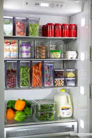

Keep Your Food Fresh, Longer
Tired of throwing away spoiled food? Our Food Storage Assistant is here to provide expert advice tailored to your needs.

Reduce Waste, Save Money
Proper food storage not only keeps your food delicious but also saves you money by preventing unnecessary spoilage. Learn how to optimize your storage habits.
Quick Tips & Tricks
Storing Berries
Keep berries unwashed in a breathable container in the fridge. Wash just before eating to prevent mold.
Herbs Freshness
Store soft herbs like cilantro and parsley like a bouquet of flowers in water. For hard herbs like rosemary, wrap in a damp paper towel.
Bread Storage
Keep bread at room temperature in a bread box or a sealed paper bag for a few days. For longer storage, freeze it.
Chat With Our AI Food Expert
Ask any question about food storage, and our assistant will help!